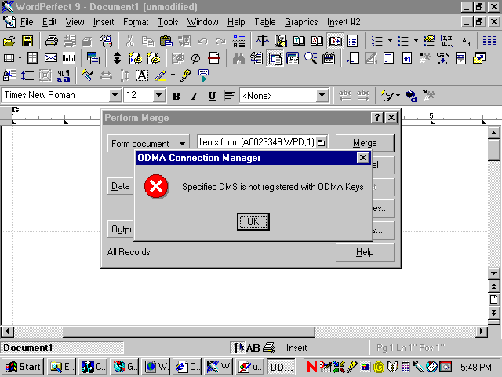

Category: Functionality - Critical Incident ID: X010100 Priority: 8 - Important Status: Correction Pending Component: ODMA32.dll2.0.0 andOdma.dll2.0.0Assigned To: tbd Reported By:
Carolyn Kaukl (2001-01-18)Date Opened: 2000-01-25 Date Closed: none
The ODMA 2.0.0 Connection Manager implementations,
ODMA32.dllandOdma.dll, presents unwanted message windows under two conditions:
INVDOCID:Invalid Document IDNODMS:Specified DMS is not registered with ODMA KeysThe messages that are produced are very plain in format:

Figure 1. ODMA Connection Manager Message (download BMP format)
If the user clicks "OK" the Connection Manager will then perform the correct operation, which is to silently report the appropriate error condition (e.g.,
ODM_E_DOCID) to the ODMA-aware application that originated the request.These messages are inappropriate and unwanted for several reasons:
- The ODMA 2.0 Connection Manager is neither localized nor designed for internationalization.
- The ODMA 2.0 Connection Manager must support "batch" and unattended operation of ODMA-aware applications. The ability to avoid all operator interventions is a specific provision of ODMA 2.0. These messages defeat the provisions for silent operation.
- The ODMA Specifications and implementation practices are based on the assumption that all interactive activities are those of the DMS and of the ODMA-aware application. The ODMA Connection Manager must passively deliver error indications (via
ODMSTATUSresult codes) for problems detected by the Connection Manager itself or reported by the DMS.- The reported conditions are not fatal and may occur under ordinary conditions in which there is no actual problem. For example, when an ODMA Document ID is obtained as a link in a document, or from an E-mail message, it may well be that the originating DMS is not available on the computer in which access to the document is attempted. The inability to use the Document ID should simply be reported back to the application for treatment as an allowable though uncommon exception.
- There are well-defined
ODMSTATUSvalues for reporting any of these conditions:ODM_E_DOCID,ODM_E_NODMS, andODM_E_FAIL, and appropriate result codes will in-fact be delivered once the user clicks the "OK" button.- The message wording is not particularly informative. The message provides information that the user of the ODMA-aware application cannot be expected to comprehend nor understand the consequences of. It is far better to have the application provide an informative display, if even needed, depending on what operations are being performed at the application level.
Although the messages have been seen under conditions where there is an error in the application, these messages are inappropriate because they can occur when there is no actual defect. The messages are not required for, nor are they helpful for troubleshooting of, ODMA 2.0 operations. The ODMA 2.0 Connection Manager Trace Log is more informative and useful for any necessary troubleshooting.
The following actions are proposed:
- Record the existence of of the problem and establish an incident report as notification and as documentation of the repair that is needed. [2001-01-29: Completed]
- Include elimination of these messages in the development of the next maintenance and functionality release 2.0.1 of the ODMA 2.0 Connection Managers. This development will be under ODMA Project P000902.
- Produce an updated, tested Connection Manager in which the repair is confirmed.
- Announce the Connection Manager revision and have it be available for download.
- Close this incident report when (1-4) are complete and it is clear that proper operation of the updated Connection Managers is fully confirmed.
The following steps were taken to confirm the claims made in this incident report:
- The ODMA 2.0 Connection Manager source code for ODMA32.dll 2.0.0 was inspected and the reported defect was located.
- Resource definition file
odma.rcdefines a string table for the two message texts.- Resource definition header file
Resource.hdefines the identification of the two message-text resources,IDS_INVDOCIDandIDS_NODMS- File
ConMan.hdeclares the prototypeErrorMessagefunction.- File
Client.cppuses theErrorMessagefunction inODMClient::ConnectDocID.- File
Init.cppdefinesErrorMessageusing the Microsoft WindowsMessageBoxfunction and a globalMAXERRSTRINGparameter (defined inConMan.h) on the length of message texts.- File
Odmdms.cppuses theErrorMessagefunction inODMDms::Init.There are other uses of the Windows
MessageBoxfunction that are only employed when the Connection Manager is compiled with debugging enabled. These cases are ignored since debugging versions are not distributed. It is advisable to remove the conditional debugging material when the ODMA Connection Manager 2.0.1 edition is produced, instead relying on a single trouble-shooting model that is reliable for production integrations as well as testing of new code.
- Carolyn Kaukl
- provided the original report of incidents, and then provided the trouble-shooting requested to confirm this part of the original problem. Carolyn provided follow-up demonstration that accepting the message box leads to correct
ODMSTATUSreturn from the ODMA operation that provoked the message box.- Dennis Hamilton
- reviewed the reports and logs, then confirmed the defects by inspection of the ODMA 2.0 Connection Manager 2.0.0 source code..
created 2001-01-25-17:22 -0800 (pst) by orcmid
$$Author: Orcmid $
$$Date: 01-02-12 12:01 $
$$Revision: 8 $
{kind=link}